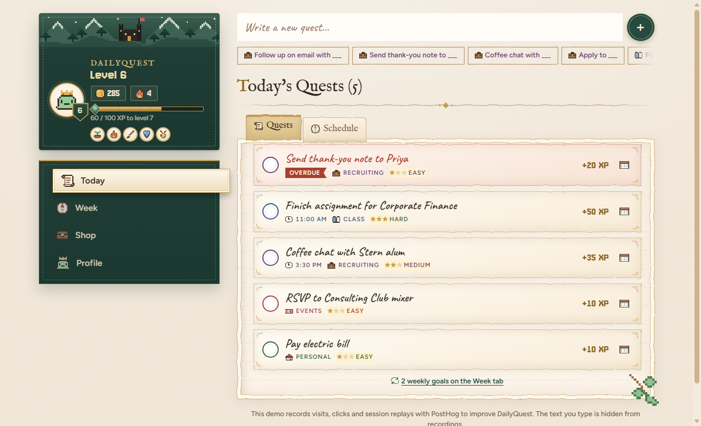
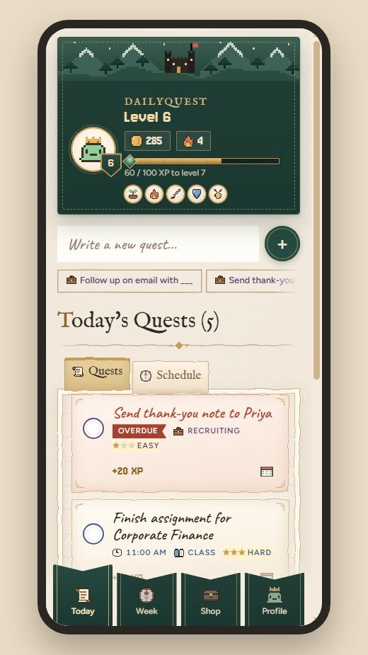
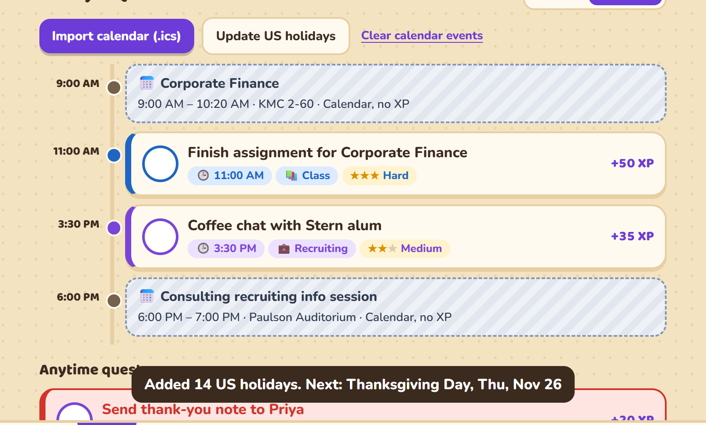
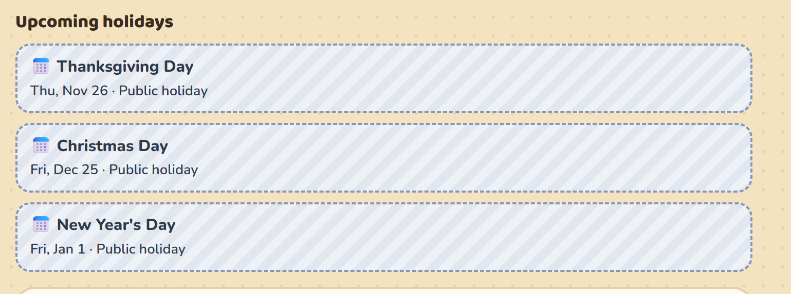

Product Showcase (Prototype / Live App / 2-Min Video)
Current Status: Build 3 (in progress): optional accounts that sync across devices, connected calendars that turn deadlines into quests, reminder notifications, an installable iPhone home-screen app, and a fuller game layer, hosted on GitHub Pages with a free Supabase backend
Demo: Try DailyQuest on your phone or laptop. It opens with sample data and works without signing up; create a free account to sync your quests.


The quest journal design on a laptop and a phone, shown with sample data.
Build 2 in action: importing public holidays
One tap on Add US holidays in the Schedule calls the free Nager.Date public holidays API straight from the browser and adds the results to the schedule and week. Captured on my laptop, before the journal redesign.


Top: the import confirmation on the Schedule. Bottom: the holidays waiting on the Week tab.
Living PRD (Product Requirements Document)
Updated every week as we test with real users and learn what works.
1. Target User & The Job to Be Done
Who is this for? People juggling busy, multitasking lives who are exhausted by managing their schedules across multiple apps, especially MBA students balancing classes, recruiting, and personal life. I'm starting with my Pod 13 classmates at NYU Stern, whom I can interview and test with every week.
The painful "Before" workflow: MBA students track their lives across 5+ places: their calendar, Brightspace for assignment due dates, email and LinkedIn for recruiting follow-ups, Slack and club pages for school and NYC events, and their own notes for personal chores. Every day they have to piece it all together again to figure out what to do, things slip (a missed thank-you note after a coffee chat, a forgotten deadline), and managing life feels like another job.
The "After" workflow with this product: They add tasks whenever something comes up, or in one quick weekly planning session. Each day they just open DailyQuest, see today's quests, and follow the list without re-planning. Finishing quests earns XP, levels, streaks, and rewards they choose themselves, so staying on top of life feels like progress instead of pressure.
2. Scope & Explicit Non-Goals
- In Scope (Core Workflow):
- Add tasks anytime, or plan the week at once: type a task in plain English, such as "coffee chat at 3pm", "thank-you note by friday" or "pset tomorrow hard", and DailyQuest sets the date, time, category (Class / Recruiting / Events / Personal) and Easy / Medium / Hard difficulty (default Medium). No form to fill in.
- Weekly goals and repeating quests: "exercise 3 times a week" becomes a weekly goal with a progress tracker on the Week tab instead of a daily task; "meditate every day" or "yoga every mon and wed" repeats on those days.
- Open the app daily: the home screen shows only today's quests, with overdue items flagged at the top.
- Complete quests and earn rewards:
- Each quest gives XP by difficulty (Easy = 10 XP, Medium = 25 XP, Hard = 50 XP), with more for recruiting tasks.
- Lifetime XP fills a level bar and never goes down; leveling up unlocks badges and themes.
- Daily streaks give bonus XP for completing at least one quest a day.
- Personal reward shop: users set their own real-life rewards (e.g., "200 XP = boba run," "500 XP = guilt-free Netflix night") and claim them from a separate spendable XP balance, so claiming a reward never lowers their level.
- Unfinished quests roll over: incomplete quests move to tomorrow automatically. A quest is flagged overdue only once it's past its due date; tasks without a due date roll over quietly.
- Weekly view: see the week at a glance, with quests completed, XP earned, and rewards claimed.
- Quick quest templates: tap a chip for a common MBA task (for example, "Send thank-you note to ___"), fill in the blank, and press Enter. Category and difficulty are pre-set. Users can save their own templates and mark any task as repeating (daily, or weekly on chosen days).
- Schedule view: tasks can have an optional start time. A vertical timeline for today shows timed quests and calendar events in order, with untimed quests listed below as "Anytime quests."
- Calendar import (.ics): read a .ics file exported from Google Calendar, entirely in the browser, and show those events on the timeline as read-only events that earn no XP.
- Public holidays (Build 2): one tap on Add US holidays calls a free public holidays API and adds upcoming US and New York holidays to the schedule and week, so students can plan around days off.
- Edit, reschedule and undo: tap a quest to edit it; the calendar button moves it to Today, Tomorrow, Next week or any date (an overdue due date moves with it). An Undo button appears for a few seconds after completing a quest and takes back the XP and rewards exactly.
- Smart input preview: while typing, the fields DailyQuest understood (title, date, time, type, difficulty, repeat) appear as editable fields; Enter still saves immediately.
- More game elements: a daily loot chest of bonus coins, a streak shield that protects one missed day, hero stats per category (Scholar, Networker, Social, Vitality), achievements that pay coins, and pixel adventurer avatars unlocked by level badges. Badges and achievements can be tapped to see what they mean.
- Start fresh: first-time visitors choose between exploring sample quests or starting with an empty journal.
- Connected calendars (Build 3): paste a calendar's subscription link once (Google Calendar's secret iCal address, Outlook, iCloud or Brightspace) and events keep updating on their own. Deadlines such as "Problem Set 3 - Due" become Class quests with a due date, and coffee chats or interviews add a "Send thank-you note to ___" quest for the next day. A pop-up explains why connecting the private link is safe and how to revoke it.
- Optional account and sync (Build 3): sign up with email and password to save quests to your account and use them on your phone and laptop; without an account everything stays in the browser. Profile is sealed until you log in, and you can change or reset your password.
- Home-screen app and reminders (Build 3): add DailyQuest to an iPhone home screen from Safari (step-by-step pop-up in the app) to use it full-screen and offline, then turn on reminders: a summary at 8:00 AM and a nudge 30 minutes before quests with a time.
- Faster capture (Build 3): while typing, a faint suggested ending from your past quests and templates appears (Tab or a tap accepts it). On a phone, swipe a quest right to complete it or left to move it to tomorrow.
- Deeper game layer (Build 3): a gold DONE stamp on every completed quest; a weekly pixel boss that your quests damage, paying loot if beaten by Sunday; a hand-drawn adventure map where each cleared day is a step and landmarks pay rewards; and adventurer gear (pets, portrait frames, titles) to buy with coins. Profile is organized into Journey, Hero and Settings chapters.
- Out of Scope #1: No two-way calendar sync. Calendars are read through subscription links (read-only). DailyQuest doesn't write quests back into Google Calendar or use Google sign-in, which would need Google's app review.
- Out of Scope #2: No email, Slack or LinkedIn reading. Calendar feeds (including Brightspace) are the only automatic source; it won't read Gmail, LinkedIn or Slack.
- Out of Scope #3: No social or team features. No shared lists, friend leaderboards, or group accountability. It's single-player for now.
3. How It Works Under the Hood & Riskiest Assumption (Week 2+)
Riskiest Assumption: DailyQuest only becomes students' one place if it can pull in what already lives elsewhere, especially their calendars and Brightspace deadlines, automatically, reliably and at $0. If students still have to retype everything, it's just one more app to check.
How Build 3 tests it: connected calendars refresh on their own and turn deadlines and coffee chats into quests. PostHog tracks the funnel calendar_feed_connected → auto_quest_created → quest_completed, plus reminders_on and login, so I can see whether students connect a calendar, whether auto-made quests get done, and whether they come back. (Build 2 tested the first outside call, the holiday import, with holidays_imported and holidays_failed.)
Simple Architecture: [You type, tap or swipe] → [DailyQuest app in your browser: plain-English rules + game logic, saved in local storage] → [Today, Week, Shop, Profile]. Optional account: [Supabase Auth, email + password] → [Supabase database: one save per user, protected so only you can read it]. Connected calendars: [your subscription link] → [Supabase Edge Function fetch-calendar] → [events and auto-made quests]. Reminders: [every 15 minutes, a scheduled job] → [Edge Function send-reminders] → [push notification to your home-screen app]. Also: the free Nager.Date holidays API, and PostHog for anonymous usage events with typed text hidden. GitHub Pages hosts the app; secret keys live only in Supabase's secret settings, never in the page or on GitHub. Optional local AI: server.js asks OpenAI to finish a half-typed quest, with the key in a private .env file and a daily cap; the public site has no AI.
Cost per run: $0. GitHub Pages hosting, Supabase's free plan (accounts, database, Edge Functions, scheduled reminders), PostHog's free tier and the holidays API cost nothing, and suggestions from the user's own past quests are free. The only paid piece is the optional local AI helper, a fraction of a cent per suggestion with a daily cap, which isn't on the public site.
4. Unit Economics & Analytics Snapshot (Updated Weekly)
Cumulative Build Spend
$0
Est. Cost Per User Run
$0 (free tiers)
User Evidence (PostHog)
Funnel live: calendar connected → auto-quest → completed; first outside users in Build 4
Sponsor Call (Week 6)
TBD